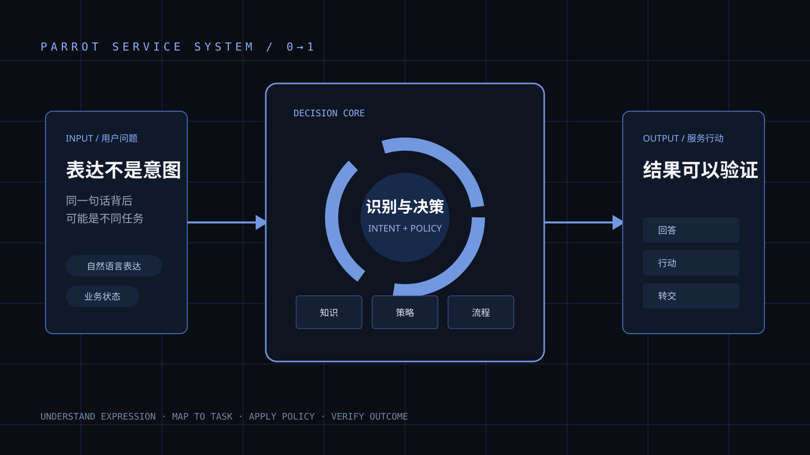

标签要连接动作。
分类体系只有进入路由与处理流程，才会成为产品能力。否则它只是统计结果。
从 0 到 1 做智能客服，也从单个功能走向完整的服务产品。

PINDUODUO / 2019—2024一端是自然语言，另一端是业务流程。智能客服需要把两端接起来。
在拼多多的这段经历中，我负责智能客服与消费者服务体验产品，从 0 到 1 搭建鹦鹉智能客服系统。它让我开始从完整服务链路看问题：听懂用户之后，还要知道如何处理，以及怎样把处理结果反馈回来。
如果只优化回复，复杂问题仍然会停在原地。产品要处理的是表达、状态和服务动作之间的关系。
用一个常见物流问题拆开服务链路。
用户想知道当前位置、需要确定送达时间，还是希望取消订单？
未发货、运输中、派送异常，需要进入不同的处理路径。
解释状态、推进查询或接续其他服务，让回答指向实际处理。
分类体系只有进入路由与处理流程，才会成为产品能力。否则它只是统计结果。
问题从一个处理环节进入另一个环节时，已确认的事实和未完成的任务需要一起传递。
从问题进入，到服务结束，再回到反馈。局部功能的改善，需要放在完整链路里判断。
NEXT PROJECT
小八 · 鹦鹉之家 →